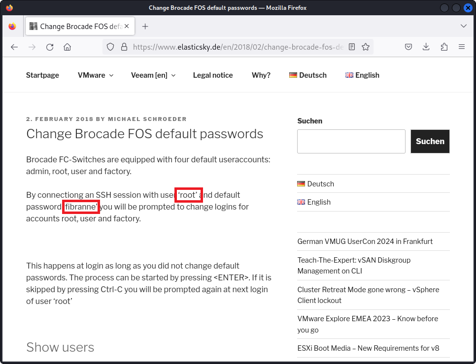
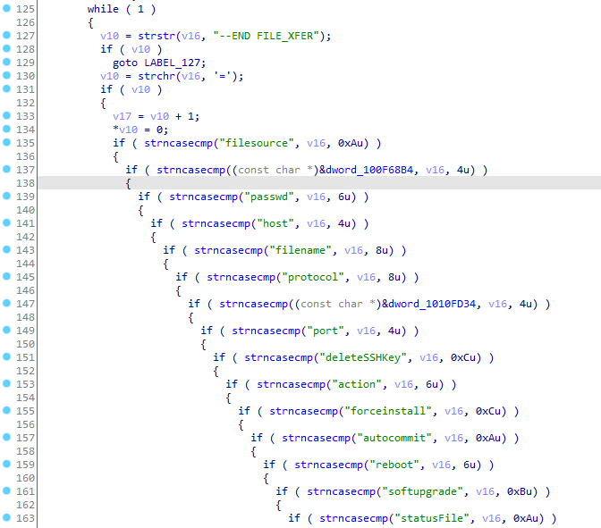
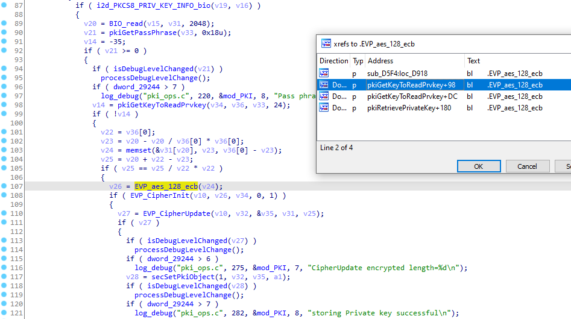

Product description
Brocade Fibre Channel switches deliver industry-leading performance that shatters bottlenecks and simplifies scale-out network architectures.
From https://www.broadcom.com/products/fibre-channel-networking/switches
Vulnerabilities Summary
Vulnerable versions: Brocade Fabric OS < 9.2.2. Note: several vulnerabilities have not been patched since they were found in EOL and unsupported versions of Brocade Fabric OS (as of March 2024).
The summary of the vulnerabilities is:
- CVE-2021-27797 - Default and weak credentials
- non-assigned CVE vulnerability - Leak of logs
- non-assigned CVE vulnerability - Incorrect permissions
- non-assigned CVE vulnerability - Insecure telnet code
- CVE-2022-33186 - Pre-auth RCE - Custom insecure management protocol with "ezswitchsetup"
- CVE-2024-5460 - Pre-auth RCE - Insecure SNMP access, leak of SNMP communities to low-privileged users and MITM RCE
- CVE-2024-5461 - Insecure Code
7.1. CVE-2023-3454, CVE-2024-7516 - HTTP server (MITM RCEs, command injections) - 0.webliker.fcg
7.2. SecTELNET server (hardcoded keys, use of ECB)
7.3. Opinions - non-assigned CVE vulnerability - Insecure code in shell scripts
- non-assigned CVE vulnerability - Lack of encryption for management protocol (HTTP)
- non-assigned CVE vulnerability - Remote execution of JAR files over HTTP and HTTPS
Miscellaneous notes:
The Report was provided in September 2022 to the Brocade support through Dell but it was rejected by Brocade because it didn't address the latest version of FOS (Fabric Operating System) while some of the tested versions were still supported (8.2.3a, 9.0.1b4 and 9.0.1c).
Status of the tested versions in September 2022 (from the official documentation):
- 8.2.3a (supported in September 2022 - screenshot showing this supported version provided in the report),
- 9.0.1b4 (supported in September 2022 - screenshot showing this supported version provided in the report),
- 9.0.1c (supported in September 2022 - screenshot showing this supported version provided in the report),
- 6.2.2f (EOL and unsupported in September 2022),
- 7.4.2c (EOL and unsupported in September 2022),
- 8.2.1c (EOL and unsupported in September 2022),
- 8.1.2d (EOL and unsupported in September 2022),
- v8.2.0_gft (EOL and unsupported in September 2022).
{kind=link}
{kind=link}
While the Report contains 0-day vulnerabilities in EOL versions of FOS (6.2.2, 7.4.2, 8.1.2, 8.2.0 and 8.2.1), it also contains 0-day vulnerabilities in supported versions of Brocade FOS (8.2.3a, 9.0.1b4 and 9.0.1c) at the time the Report was shared with Dell and Brocade.
However, this entire security assessment was rejected by Brocade (refer to the Timeline for more information).
Two months after the Report was rejected, one of the reported vulnerability, Pre-auth RCE - Custom insecure management protocol with "ezswitchsetup", was internally found by Brocade and patched in November 2022: CVE-2022-33186 (CVSS: 9.4, Critical, credited to Brocade). I was finally credited for this vulnerability in April 2024.
The Report was shared again with Brocade (through the Brocade PSIRT) in January 2024 following a coordinated disclosure of SANnav vulnerabilities, which was also initially rejected by Brocade. Brocade confirmed the vulnerabilities and asked to delay any disclosure until October 2024 to prepare security patches. Subsequentely Brocade released a security bulletin in November 2024 - 27 months after a full security assessment had been initially shared with Brocade and 10 months after it had been shared with Brocade PSIRT.
4 reported vulnerabilities were confirmed to be Remote Code Executions: CVE-2022-33186, CVE-2023-3454, CVE-2024-5461 and CVE-2024-7516. Some vulnerabilities found in EOL and unsupported releases also did not receive a CVE identifier.
Unfortunately, because the Fibre Channel switches were used in production, the following analysis had to be extremely superficial and no dynamic analysis was performed. However, there are likely many more exploitable vulnerabilities. I did not have access to a test device and was not allowed to exploit any vulnerability since it could disrupt the production network.
Impacts
An attacker can compromise Brocade switches. These switches are running Linux and are powerful. They are ideal to host implants.
The vendor provided an evaluation of the vulnerabilities 21 months after reporting them:
Already patched:
- Default credentials - CVE-2021-27797
- Custom insecure management protocol with "ezwitchsetup" - CVE-2022-33186
- Insecure code - 0.webliker.fcg - CVE-2023-3454
Vulnerabilities that will be patched and CVEs will be assigned:
- Insecure SNMP access and lack of encryption for management protocol (SNMP) - SNMPv1 usage and default community strings
- Weblinker and other critical backend processes (which make use of system() calls) still run as root user
- Insecure code - Scp operations on the switch do not enforce strict host key checking
Vulnerabilities affecting unsupported versions of FOS - no patches will be provided:
- Leak of logs
- Incorrect permissions
- Insecure code Issue with ""bc_systemFileCmd_set ()""
- Insecure code - sectelnet with ECB
- insecure code - sectelnet with hardcoded key
- Lack of encryption for management protocol (HTTP) - use of JAR over HTTP
- Insecure telnet code
- Insecure code in shell scripts
Not a vulnerability:
- Inconsistency in firewall rules [N.B. Pierre - removed from this security advisory]
- Lack of encryption for management protocol (HTTP) - use of HTTP is not a vulnerability
Recommendations
- Do not use unsupported versions of Fabric OS;
- Do not expose Fibre Channel switches to the network;
- Use network segmentation if the management interface must be exposed;
- Reduce the attack surface by disabling TELNET, SNMP, HTTP, HTTPS and ezswitchsetup access;
- Use only SSH access with MFA and update iptables firewall rules using root access only to allow specific IPs to reach SSH.
Details - Default and weak credentials
It was observed that the Brocade switches use default and weak credentials by default. It is recommended to update them:
root/fibranne
The credentials root/fibranne are well-known and, if not changed by admins, can be used to remotely compromise the devices using the telnet, the SSH or the web interfaces, as shown below.
https://www.elasticsky.de/en/2018/02/change-brocade-fos-default-passwords/:

An attacker can get root access to the devices using known credentials.
An attacker can upload malicious firmware images and install them: the device will stay compromised forever.
An attacker can change the IP address of any switch to the IP address of the local gateway and DoS the entire network segment, impacting several critical services.
Details - Leak of logs
It was observed that the version v6.2.2f is vulnerable to an authentication bypass. This allows an attacker to retrieve the logs over HTTP without authentication by visiting the /events.html webpage:
Only the version v6.2.2f is vulnerable to an authentication bypass. The other firmware versions are not vulnerable to this authentication bypass.
This vulnerability was likely silently patched by the vendor.
Details - Incorrect permissions
It was observed that the version v6.2.2f uses incorrect permissions for /etc/hosts - any user can edit this file:
kali% cat test-rw-hosts.sh
#!/bin/sh
echo 6.2.2f
sshpass -p "advisory" ssh -l root -o KexAlgorithms=diffie-hellman-group1-sha1 10.14.1.1 ls -la /etc/hosts
echo 7.4.2c
sshpass -p "advisory" ssh -l root 10.14.1.2 ls -la /etc/hosts
echo 8.2.1c
sshpass -p "advisory" ssh -l root 10.14.1.3 ls -la /etc/hosts
echo 8.1.2d
sshpass -p "advisory" ssh -l root 10.14.1.4 ls -la /etc/hosts
echo 9.0.1b4
sshpass -p "advisory" ssh -l root 10.14.1.5 ls -la /etc/hosts
kali% ./test-rw-hosts.sh
6.2.2f
-rw-rw-rw- 1 root root 6101 Dec 26 2019 /etc/hosts
7.4.2c
-rw-r--r-- 1 root sys 4344 Jan 2 2020 /etc/hosts
8.2.1c
-rw-r--r-- 1 root sys 4415 Oct 18 2019 /etc/hosts
8.1.2d
-rw-r--r-- 1 root sys 4288 Dec 27 2019 /etc/hosts
9.0.1b4
-rw-r--r-- 1 root root 5861 Oct 23 2021 /etc/hosts
kali%
This allows a local attacker to edit the /etc/hosts file in the 6.2.2f firmware version, for example to define a specific HOST entry for a radius server. This can be used for Local Privilege Escalation.
Other firmware versions are not vulnerable.
Other files have been found to be word-readable:
The file /etc/fabos/fabos.0.conf contains the entire configuration of the switch, including clear-text passwords. It was observed that this file is world-readable in the 6.2.2f and 7.4.2c versions.
Interestingly, this incorrect permission was patched in 8.x and 9.x versions:
kali% sh incorrect.permissions.txt.sh
6.2.2f
-rw-r--r-- 1 root sys 16339 Aug 21 11:33 /etc/fabos/fabos.0.conf
7.4.2c
-rw-r--r-- 1 root sys 29941 Aug 21 11:35 /etc/fabos/fabos.0.conf
8.2.1c
-rw------- 1 root sys 32116 Aug 21 19:35 /etc/fabos/fabos.0.conf
8.1.2d
-rw------- 1 root sys 41128 Aug 21 11:35 /etc/fabos/fabos.0.conf
9.0.1
-rw------- 1 root sys 138577 Aug 20 18:22 /etc/fabos/fabos.0.conf
kali%
The /etc/fabos/user.db - a sqlite3 database file - also contains information regarding the local users.
It was observed that this file is incorrectly protected in the 6.2.2f version:
-rw-r--r-- 1 root nobody 14336 Dec 26 2019 /etc/fabos/user.db
Details - Insecure telnet code
It was observed that the telnetd server in all the firmware versions is a fork of netkit-telnet with custom codes.
The code uses insecure calls to system() and popen():
sub_100043D0() inside the /usr/libexec/telnetd binary:
Furthermore, sensitive information is written into the logs. When the debug is enabled, it will log the encrypted communication into a log file:
In the calls to output_data(), the communication will be automatically saved in a log file.
Details - Pre-auth RCE - Custom insecure management protocol with "ezswitchsetup"
The switches can be configured using the ezswitchsetup program, which is a custom and proprietary program from Brocade. This client is available at https://archive.org/download/BrocadeEZSwitchSetupV7.1.0. [Note - Unfortunately, although this link was active since 2014, it was removed after Brocade rejected the Report in 2022. It is unclear whether the removal is related to the Report.]
This program will interact with the switches on the port 52357/udp.
On port 52357/udp on the switch runs a program superd as root that will execute a lot of insecure commands to configure the switches:
udp 0 0 0.0.0.0:52357 0.0.0.0:* 0 4023 1569/superd
Interestingly, it appears this program is supposed to work only on the same subnet (Layer 2) as shown below but it is possible to replay the packets by changing the broadcast IP to the IP of the targeted switch.
On a LAN, it was possible to capture a packet, modify it and send it to a remote: the switch successfully replied. These packets are in clear-text.
There is also no authentication mechanism:
kali% cat new-packet-2.txt
kali% printf "$(< new-packet-2.txt)"
[REDACTED-BINARY-CONTENT]
<?xml version="1.0"?>
<Request xmlns:xsi="http://www.w3.org/2001/XMLSchema-instance" xsi:noNamespaceSchemaLocation="calobject.xsd" opcode="GetInstance" objectCount="1">
<Class name="Brocade_Switch" majorVersion="1" minorVersion="0" propertyCount="8" >
<Property name="Name" type="string" encoding="No Encoding" >
<Value>10:00:[REDACTED]</Value>
</Property>
<Property name="Model" type="string" encoding="No Encoding" >
<Value></Value>
</Property>
<Property name="DHCP" type="boolean" encoding="No Encoding" >
<Value>0</Value>
</Property>
<Property name="FirmwareVersion" type="string" encoding="No Encoding" >
<Value></Value>
</Property>
<Property name="OutBandMask" type="string_array" encoding="No Encoding" >
<Value></Value>
</Property>
<Property name="OutBandIPAddressList" type="string_array" encoding="No Encoding" >
<Value></Value>
</Property>
<Property name="Gateway" type="string" encoding="No Encoding" >
<Value></Value>
</Property>
<Property name="CreationClassName" type="string" encoding="No Encoding" >
<Value>Brocade_Switch</Value>
</Property>
</Class>
</Request>
kali%
This program allows to change the IP of a switch and to edit its configuration depending on the Switch World Wide Name (WWN), an entirely guessable number:

Datagrams sent by EZSwitchSetup:
When replaying the same packet and changing the broadcast IP to the IP of the targeted switch, the switch will reply:
When analyzing the superd program, it appears it is poorly written and there is no authentication. It uses a lot of calls to system() and it is possible to change the passwords using this execution flow:
main -> sub_103FBFDC -> hasm_main_loop -> sub_1040649C -> hasm_update_password()
hasm_update_password function executing /fabos/libexec/userdb_sync:
It is possible to list the 145 calls to the insecure function system():
As these switches were used in production, no exploitation bas heen carried out.
From static analysis, an attacker can take control of switches without authentication.
Note: this rejected vulnerability was later found by Brocade in November 2022 and I was finally credited 18 months later: CVE-2022-33186 (CVSS: 9.4 - CRITICAL).
Details - Pre-auth RCE - Insecure SNMP access, leak of SNMP communities to low-privileged users and MITM RCE
The switches can be managed using SNMP.
When doing reverse engineering against the snmpd binary, several read-only and read-write access were found. In the function sub_100570F0(), there is an array of valid SNMP communities:
At the offset 101CB670 in .data, we can extract these communities:
These communities work on all switches if these credentials have not been updated:
kali% snmpwalk -v 1 -c 'Secret C0de' 10.14.1.5
iso.3.6.1.2.1.1.1.0 = STRING: "Access Gateway."
iso.3.6.1.2.1.1.2.0 = OID: iso.3.6.1.4.1.1588.2.1.3
iso.3.6.1.2.1.1.3.0 = Timeticks: (3784429504) 438 days, 0:18:15.04
iso.3.6.1.2.1.1.4.0 = STRING: "Admin team"
iso.3.6.1.2.1.1.5.0 = STRING: "SWITCH"
iso.3.6.1.2.1.1.6.0 = STRING: "LOCATION"
iso.3.6.1.2.1.1.7.0 = INTEGER: 79
iso.3.6.1.2.1.2.1.0 = INTEGER: 30
kali% snmpwalk -v 1 -c 'OrigEquipMfr' 10.14.1.5
iso.3.6.1.2.1.1.1.0 = STRING: "Access Gateway."
iso.3.6.1.2.1.1.2.0 = OID: iso.3.6.1.4.1.1588.2.1.3
iso.3.6.1.2.1.1.3.0 = Timeticks: (3784431004) 438 days, 0:18:30.04
iso.3.6.1.2.1.1.4.0 = STRING: "Admin team"
iso.3.6.1.2.1.1.5.0 = STRING: "SWITCH"
iso.3.6.1.2.1.1.6.0 = STRING: "LOCATION"
iso.3.6.1.2.1.1.7.0 = INTEGER: 79
iso.3.6.1.2.1.2.1.0 = INTEGER: 30
When reading the documentation, it appears these SNMP communities are well-documented: https://techdocs.broadcom.com/us/en/fibre-channel-networking/fabric-os/fabric-os-web-tools/9-1-x/v26882500/v26815803/v26850344.html:

It is also possible to extract the SNMP communities from a low-privilege user, as shown below, in switches still providing the Brocade JAVA client, the SNMP communities will be communicated in clear text over HTTP:
Furthermore, the snmpd binary runs as root. And the code contains several executions of commands as root. For example, the function bc_systemFileCmd_set() managing the download of firmware images:
On a side note, we can also see that the SSH keys are not verified when using scp/sftp, allowing an attacker to MITM and intercept credentials over the network and inject a malicious firmware image during the update process to get a Remote Code Execution/downgrade of a vulnerable firmware version.
There are also potential command injections everywhere.
Details - Insecure Code
The quality of the code present in the switch is quite interesting.
When doing reverse engineering on the snmpd binary in the 9.0.1b4 version, a lot of commands are executed using system() in the function sub_10085C64():
The /etc/rc.d/init.d/system.sh script is vulnerable to command injection or argument injection with scp and sftp in Insecure code in shell scripts.
When reading scripts shells, we can also confirm security is regularly dismissed (Insecure code in shell scripts).
HTTP server (MITM RCEs, command injections) - 0.webliker.fcg
We can see insecure executions of scp/sftp in the 0.webliker.fcg program (a custom HTTP server), running as root and reachable by an authenticated web user:
SWITCH:FID1:root> ps auxw | grep link
root 3078 0.5 0.2 139656 41280 ? Sl 2021 2313:08 /fabos/webtools/htdocs/0.weblinker.fcg
root 3358 0.0 0.0 2272 396 pts/0 S+ 11:44 0:00 grep link
SWITCH:FID1:root> exit
This program provides the back-end interface to manage HTTP/HTTPS APIs. For example, the JAVA client is able to install a new firmware image as shown below:
A specific HTTP request will be created by the JAVA client and this POST request will then be parsed by the 0.webliker.fcg program.
The user can submit specific values in a POST request - these values will be parsed by the 0.weblinker.cfg program, running as root on the switch:
Function parseRequest in the 0.weblinker.fcg program:

Function parseRequest in the 0.weblinker.fcg program:
And then these values will directly be used in commands (user, password, host, ...) executed as root (lines 1052 and then 1067 in the pseudo-code in the next image).
It is also worth noting that by default, in these commands, the SSH keys of the remote server are not checked, allowing any attacker to MITM and intercept credentials over the network and/or inject a malicious firmware image during the update process to get a Remote Code Execution/downgrade of a vulnerable firmware version.
For example, the function configXfer in the 0.weblinker.fcg is used to upload configuration file over SCP:
The code in the 0.weblinker.fcg program contains multiple command injections.
SecTELNET server (hardcoded keys, use of ECB)
The SecTelnet functionality provides secure connection to the switch. This is a custom implementation from Brocade that dates from 2000s. The telnet server will call the binary /fabos/libexec/secDecrypt:
The secDecrypt program will be called and this program is linked to libpki.so. libpki.so provides functions for encryption/decryption.
libpki.so uses ECB (Electronic Codebook) encryption mode that is strongly not recommended to use in cryptographic protocols. It was also possible to find a hardcoded key used for cryptography inside this library:
Function sub_D5F4 in libpki.so - Use of ECB with 4 Cross-references:

Function pkiCsrGenExin in libpki.so - Use of a hardcoded key:
Opinions
The code quality is interesting (use of ECB, use of system() and popen() everywhere, use of hardcoded key inside binaries) and likely contains several critical vulnerabilities.
The SSH keys are not checked, allowing an attacker to MITM and get Remote Code Execution against the switches (via the injection of a malicious firmware image or a previous vulnerable firmware version during the update process).
Unfortunately, because these devices were used in production, this analysis had to be extremely superficial and no dynamic analysis was performed. However, there are likely many more exploitable vulnerabilities.
I did not have access to a test device and was not allowed to exploit any vulnerability since it could disrupt the production network.
Details - Insecure code in shell scripts
The shell scripts inside the switches are insecure.
For example, in the v9.0.1b4 firmware version, the script /etc/init.d/system.sh is used to debug switches. This script can be executed from the snmp binary.
The result of the /fabos/bin/supportshow command will be sent to a remote SSH server without checking the identity of the remote server (-oStrictHostKeyChecking=no). This allows an attacker to MITM the SSH connection.
There is also a fall-back to plain-text FTP (on line 52).
Content of /etc/init.d/system.sh:
37 #Redirecting the output to the file in remote server 38 if [ "$7" == "scp" ] ; then 39 /usr/bin/scp -q -oStrictHostKeyChecking=no $y $1@[$3]:$4 # > /dev/null 2>&1 40 elif [ "$7" == "sftp" ] ; then 41 x="/tmp/snmpd_sftp_file.bat" 42 echo "put $y $8" > $x #2>/dev/null 43 /usr/bin/sftp -oPort=${10} -oPreferredAuthentications=password -oSSHPassword=$2 -oStrictHostKeyChecking=no -b $x $1@[$3]:$4 #> /dev/null 2>&1 44 retVal=$? 45 if [ "$retVal" != 0 ] ; then 46 if [ "${10}" -gt 0 ] ; then 47 /usr/bin/sftp -oPort=${10} -oPreferredAuthentications=password -oSSHPassword=$2 -oStrictHostKeyChecking=no -oBatchMode=no -b $x $1@[$3]:$4 # > /dev/null 2>&1 48 else 49 /usr/bin/sftp -oPreferredAuthentications=password -oSSHPassword=$2 -oStrictHostKeyChecking=no -oBatchMode=no -b $x $1@[$3]:$4 50 fi 51 fi 52 elif [ "$7" == "ftp" ] ; then 53 /bin/ncftpput -t 60 -u $1 -p $2 $3 $4 $y #> /dev/null 2>&1
Also the -oSSHPassword is a non-standard option for sftp and passwords will appear in the process list.
Details - Lack of encryption for management protocol (HTTP)
It was observed that the firmware versions below provide management over HTTP:
- 6.2.2f
- 7.4.2c
- 8.2.1c
- 8.1.2d
- 8.2.3a
This allows an attacker to retrieve passwords of devices by sniffing the network:
09:04:57.406608 IP 10.13.3.7.59090 > 10.13.3.8.http: Flags [P.], seq 1:274, ack 1, win 229, options [nop,nop,TS val 96789859 ecr 3236098423], length 273: HTTP: GET /authenticate.html HTTP/1.1
[...]
0x0030: ffff ffff 4745 5420 2f61 7574 6865 6e74 ....GET./authent
0x0040: 6963 6174 652e 6874 6d6c 2048 5454 502f icate.html.HTTP/
0x0050: 312e 310d 0a55 7365 722d 4167 656e 743a 1.1..User-Agent:
0x0060: 2053 414e 6e61 764d 502d 322e 312e 312d .SANnavMP-2.1.1-
0x0070: 7065 7266 6d6f 6e2d 6d77 0d0a 4175 7468 perfmon-mw..Auth
0x0080: 6f72 697a 6174 696f 6e3a 2043 7573 746f orization:.Custo
0x0090: 6d5f 4261 7369 6320 ffff ffff ffff ffff m_Basic.....[REM
0x00a0: ffff ffff ffff ffff ffff ffff 0d0a 4361 OVEDREMOVED]....
0x00b0: 6368 652d 436f 6e74 726f 6c3a 206e 6f2d che-Control:.no-
0x00c0: 6361 6368 650d 0a50 7261 676d 613a 206e cache..Pragma:.n
0x00d0: 6f2d 6361 6368 650d 0a48 6f73 743a 20ff o-cache..Host:.[
0x00e0: ffff ffff ffff ffff ffff ffff 0a41 6363 REMOVEDREMO].Acc
0x00f0: 6570 743a 2074 6578 742f 6874 6d6c 2c20 ept:.text/html,.
0x0100: 696d 6167 652f 6769 662c 2069 6d61 6765 image/gif,.image
0x0110: 2f6a 7065 672c 202a 3b20 713d 2e32 2c20 /jpeg,.*;.q=.2,.
0x0120: 2a2f 2a3b 2071 3d2e 320d 0a43 6f6e 6e65 */*;.q=.2..Conne
0x0130: 6374 696f 6e3a 206b 6565 702d 616c 6976 ction:.keep-aliv
0x0140: 650d 0a0d 0a e....
Since the credentials are just base64-encoded, it is possible to decrypt them:
kali% echo YWRtaW46YWR2aXNvcnk= | base64 -d;echo
admin:advisory
Using stolen credentials, it is possible to SSH the Brocade switches:
kali% sshpass -p 'advisory' ssh -l admin 10.13.3.8
Warning: SSH client configured for wide compatibility by kali-tweaks.
SWITCH:admin>
Details - Remote execution of JAR files over HTTP and HTTPS
The firmware versions below provide management over HTTP with a JAVA client:
- 6.2.2f
- 7.4.2c
- 8.2.1c
- 8.1.2d
- 8.2.3a
The firmware version below provides management over HTTPS with a JAVA client:
- 8.2.0gft
The management interface is provided by a JAVA client that will download .jar files from the switches over the network (clear-text HTTP or insecure HTTPS).
Starting the JAVA Client from the browser:

Content of the JNLP file provide by the switch to the browser:
<?xml version="1.0" encoding="utf-8"?>
<jnlp spec="1.7+" codebase="http://10.13.3.8/">
<information>
<title>swd : WebTools: Switch Explorer</title>
<vendor>[REDACTED]</vendor>
<description>Web Tools</description>
<icon kind="splash" href="/Splash_WT.jpg"/>
</information>
<application-desc main-class="com.brocade.web.switchview.SwitchExplorerApplet">
<argument>[REDACTED]</argument>
</application-desc>
<resources>
<j2se version="1.7+" initial-heap-size="64m" max-heap-size="512m" /><jar href="wt-app.jar" download="eager"/>
<jar href=" wt-thirdparty.jar" download="eager"/>
<property name="jnlp.packEnabled" value="true" />
<property name="jnlp.wt.page" value="/switchExplorer.html" />
<property name="jnlp.wt.token" value="" />
<property name="jnlp.wt.authenticated" value="-2" />
<property name="jnlp.wt.WebStarted" value="yes" />
<property name="jnlp.wt.urlProtocol" value="http" />
<property name="jnlp.wt.urlPort" value="80" />
<property name="jnlp.wt.adCapable" value="0" />
<property name="jnlp.wt.isVFEnabled" value="false" />
<property name="jnlp.wt.switchName" value="[REDACTED]" />
<property name="jnlp.wt.isSwitchManager" value="false" />
</resources>
<security>
<all-permissions/>
</security>
</jnlp>
We can confirm the traffic of .jar files over HTTP or HTTPS using a second switch and the JAVA client will download files containing executable codes that will run on the workstation:

Report Timeline
- Aug 2022: Security assessment performed on Brocade Fibre Channel switches.
- Sep 2022: A complete report was sent to Dell (as a support provider for this software) and forwarded to Brocade.
- Sep 2022: The report was rejected by Brocade.
- Oct 2022 - Dec 2022: Negotiations with Brocade to get security patches.
- Nov 8, 2022: CVE-2022-33186 - Pre-auth RCE - Custom insecure management protocol with "ezswitchsetup" - RCE was patched and credited to Brocade.
- Dec 7, 2022: Failed negotiations: Brocade support team confirmed that (i) no security patches would be provided since the tests were not carried out on the latest version and therefore invalid, (ii) all the reported vulnerabilities were misconfiguration issues in the devices and sannav, (iii) anyway, since the tested versions were EOL, CVEs would never be published even if a vulnerability is found and (iv) Brocade asked Dell to provide a list of relevant vulnerabilities for the supported versions.
Pierre's comments: At that time, some of the reported vulnerabilities were found in 3 supported versions of FOS (Fabric Operating System). - Dec 12, 2022: Contacted Dell to clarify CVE-2022-33186 and reach Brocade to provide credits.
- Jan 31, 2023: The report was sent again to the Dell's Broadcom support team.
- Feb 1, 2023: Dell replied that no actions would be taken until the vulnerabilities were replicated by the customer in the latest versions of SANnav and FOS and confirmed that the latest FOS and SANnav were patched.
- Jan 29, 2024: Contacted Dell to clarify CVE-2022-33186 and reach Brocade to provide credits.
- Jan 30, 2024: Dell provided a list of unrelated CVEs.
- Jan 31, 2024: Contacted Dell to clarify CVE-2022-33186 and reach Brocade to provide credits.
- Jan 31, 2024: The Report was sent to Brocade PSIRT and clarifications on CVE-2022-33186 were requested to Brocade.
- Mar 22, 2024: The Report was sent again to Brocade PSIRT.
- Mar 22, 2024: Brocade PSIRT replied that they were investigating the vulnerabilities.
- Apr 18, 2024: Contacted Brocade PSIRT to get status of the vulnerabilities.
- Apr 18, 2024: Brocade PSIRT replied that they were currently reviewing all the issues.
- Apr 25, 2024: Brocade PSIRT confirmed that they were validating the analysis of the vulnerabilities.
- May 3, 2024: Brocade PSIRT informed me that more time would be required to analyze all the reported vulnerabilities.
- May 6, 2024: Asked the Brocade PSIRT when they would be able to share the analysis.
- May 7, 2024: Brocade PSIRT confirmed that they would share the results of the final investigation next week. They also justified the previous rejections of the Report because attempts were made through an OEM support organization and "OEM support organizations are not equipped to respond to an investigation made for an end of support software version" and "As a result, Brocade PSIRT / Engineering wasn't aware of this initial attempt to raise your issue". Brocade PSIRT also confirmed that they (Brocade PSIRT) would always investigate potential vulnerabilities.
- May 7, 2024: I provided Brocade PSIRT the official email sent by Brocade in 2022 where Brocade L3 support replied that security vulnerabilities would not be patched and that the Report was rejected.
Pierre's comments: Brocade was made aware of these vulnerabilities in 2022 and rejected the report, while 3 versions were still supported at that time. - May 17, 2024: Brocade PSIRT provided an analysis of the vulnerabilities.
- May 20, 2024: Asked Brocade PSIRT when the security patches would be available and asked about a coordinated disclosure.
- May 30, 2024: Sent a follow-up email to Brocade PSIRT.
- May 30, 2024: Brocade PSIRT said a report would be sent tomorrow.
- Jun 3, 2024: Brocade PSIRT confirmed that security patches would be available in September 2024 and then several vulnerabilities were under embargo until the end of October 2024.
- Jun 8, 2024: I confirmed that I would publish a security advisory containing all the vulnerabilities at the end of October 2024, after the end of embargo.
- Jun 8, 2024: Brocade PSIRT confirmed they received my email.
- Jun 10, 2024: Brocade PSIRT confirmed that they would work with me on the October announcement.
- Oct 31, 2024: Asked Brocade PSIRT to communicate the links of the security bulletins and said that I would publish the technical advisory in the first week of November 2024, even without official security bulletins.
- Oct 31, 2024: Brocade PSIRT replied that security bulletins would be published on November 12, 2024.
- Nov 1, 2024: I replied that the embargo period set by Brocade ended and that I was planning to publish a security advisory. I requested the corresponding CVE identifiers and the vulnerable and patched firmware versions for all the vulnerabilities.
- Nov 7, 2024: Brocade PSIRT indicated they would provide more information later regarding the vulnerabilities.
- Nov 8, 2024: Brocade PSIRT provided a link to CVE-2024-5460, CVE-2024-5461 and CVE-2020-10188 and confirmed that additional updates would be published.
- Nov 8, 2024: Asked Brocade PSIRT information regarding missing CVEs in supported and unsupported versions of Fabric OS.
- Nov 8, 2024: Brocade informed me that the security advisory would be published on November 12.
- Dec 11, 2024: Brocade PSIRT provided a link to CVE-2024-7516.
- Mar 31, 2025: A security advisory is published.
Credits
These vulnerabilities were found by Pierre Barre aka Pierre Kim (@PierreKimSec).
References
https://pierrekim.github.io/blog/2025-03-31-brocade-switches-10-vulnerabilities.html
https://pierrekim.github.io/advisories/2025-brocade-switches.txt
CVE-2024-7516 - Brocade Fabric OS before 9.2.2 does not enforce strict host key checking
CVE-2024-5460 - Fabric OS versions prior to v9.0 have default community strings
CVE-2024-5461 - Command or parameter injection via unique embedded switch SNMP commands
CVE-2023-3454 - Remote code execution (RCE) vulnerability in Brocade Fabric OS
CVE-2022-33186 - EZServer module vulnerability. (BSA-2022-2121)
Disclaimer
This advisory is licensed under a Creative Commons Attribution Non-Commercial Share-Alike 3.0 License: http://creativecommons.org/licenses/by-nc-sa/3.0/
published on 2025-03-31 00:00:00 by Pierre Kim <pierre.kim.sec@gmail.com>